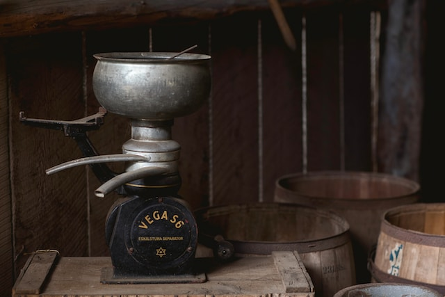

The History of Coffee
Here is a detailed history of coffee, one of the most popular beverages in the world.
- The Origin of Coffee
- The Spread of Coffee
- Coffee Houses
- Modern Production Techniques
- The Health Benefits of Coffee
- References and Credits
The Origin of Coffee
The history of coffee dates back to centuries of old oral tradition in modern-day Ethiopia and Yemen. It was already known in Mecca in the 15th century. Also, in the 15th century, Sufi monasteries in Yemen employed coffee as an aid to concentration during prayers ¹.
Coffee is believed to have originated in the Ethiopian province of Kaffa, where it was discovered by a goat herder named Kaldi. Kaldi noticed that his goats became more energetic after eating the berries of a certain plant. He tried the berries himself and found that they had a similar effect on him. He then took the berries to a nearby monastery, where the monks brewed them into a beverage. The drink was found to be invigorating and helped the monks stay awake during long hours of prayer ².
The Spread of Coffee
Coffee later spread to the Levant in the early 16th century; it caused some controversy on whether it was halal in Ottoman and Mamluk society. Coffee arrived in Italy the second half of the 16th century through commercial Mediterranean trade routes, while Central and Eastern Europeans learned of coffee from the Ottomans. By the mid 17th century, it had reached India and the East Indies ¹.
Coffee Houses
Coffee houses were established in Western Europe by the late 17th century, especially in Holland, England, and Germany. One of the earliest cultivations of coffee in the New World was when Gabriel de Clieu brought coffee seedlings to Martinique in 1720. These beans later sprouted 18,680 coffee trees which enabled its spread to other Caribbean islands such as Saint-Domingue and also to Mexico. By 1788, Saint-Domingue supplied half the world's coffee ¹.
Modern Production Techniques
By 1852, Brazil became the world's largest producer of coffee and has held that status ever since. The period since 1950 saw the widening of the playing field owing to the emergence of several other major producers, notably Colombia, the Ivory Coast, Ethiopia, and Vietnam; the latter overtook Colombia and became the second-largest producer in 1999. Modern production techniques along with the mass productization of coffee has made it a household item today ¹.
The Health Benefits of Coffee
Coffee is not only a delicious beverage but also has several health benefits. Studies have shown that coffee can help reduce the risk of several diseases, including type 2 diabetes, liver disease, and Parkinson's disease ³. Coffee is also rich in antioxidants, which help protect the body against damage from free radicals ⁴ .
References and Credits
- Wikipedia The History of Coffee
- NCAUSA The History of Coffee
- Healthline Top 13 Evenidence Based Health Benefits of Coffee
- Medical News Today Is coffee good for you?
- Cover Photo Amanda Kerr on Unsplash
- This article was composed by Bing AI